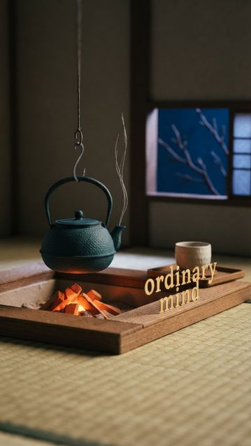
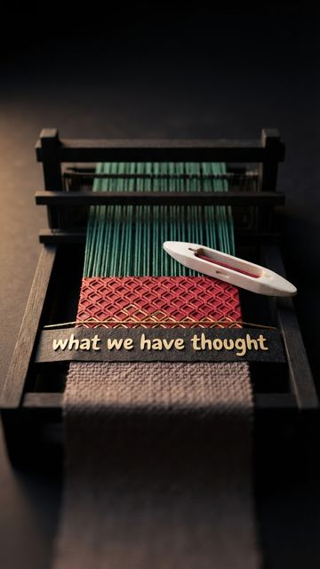
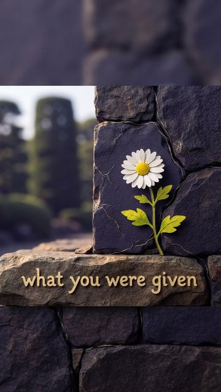
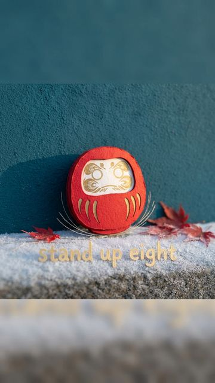

Every scene from @zenforbusyminds, sized for your phone. Free to keep.
Each post's caption ends with its No. — find the same number here. Tap a picture to open it, then press and hold to save it to your photos.



